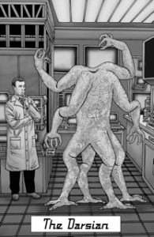
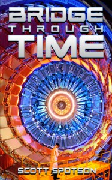

From the journal
Sequel to "Life II" -- "Bridge Through Time"
Bridge Through Time is the sequel to Spotson's successful debut novel, Life II. Max's son, Dr. Kyle Thorning, is now a high particle physicist at CERN in Switzerland. Meanwhile, after First Contact, powerful aliens with four arms and four legs, named Darsians, are taking control of the planet, with the muted subservience of its human population due to the astounding technological advances that the aliens introduce. Kyle has a powerful weapon—a new Time Travel machine—and must decide to travel to his father's old parallel universe, where he doesn't even exist, or confront the aliens in his home universe.
http://www.amazon.com/Bridge-Through-Time-Scott-Spotson-ebook/dp/B00M4S2QLC
#timetravel #scifi

http://www.amazon.com/Bridge-Through-Time-Scott-Spotson-ebook/dp/B00M4S2QLC
#timetravel #scifi




